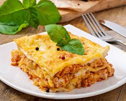

Lasagna

Home Page
Desription
Ingredients
- Cheese Filling: ricotta and parmesan with seasonings
- Meat: Italian sausage and ground beef
- Sauce: Pasta sauce or Marinara sauce
- Spinach (variation): Spinach is optional but delicious in lasagna.
Thaw 10oz of frozen spinach, squeeze out the
moisture, and add it along with the cheese layer.
How to make lasagna
- Boil pasta: In a large pot of salted water boil lasagna noodles per the recipe below.
- Prepare meat sauce: Cook sausage and beef with onion and garlic.Drain well,
add the pasta sauce & simmer it for a few minutes to thicken.
- Combine cheese mixture: Stir the cheese mixture together in a bowl.
- Layer & bake: Layer the meat sauce and cheese mixture with lasagna noodles
and bake until the top of the lasagna is golden brown.
How to Layer Lasagna
- Spread about a cup of meat sauce into a 9×13 pan. Add a layer of noodles.
- Top the noodles with some of the ricotta cheese mixture. Repeat the layers,
ending with a layer of noodles and sauce
- Cover with foil and bake. Remove foil, top with mozzarella and parmesan,
and bake for another 15 minutes.